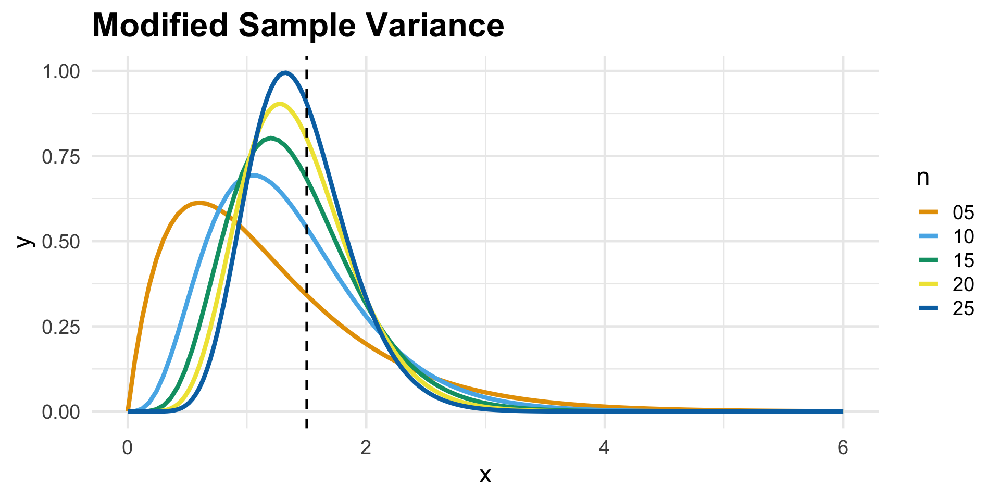
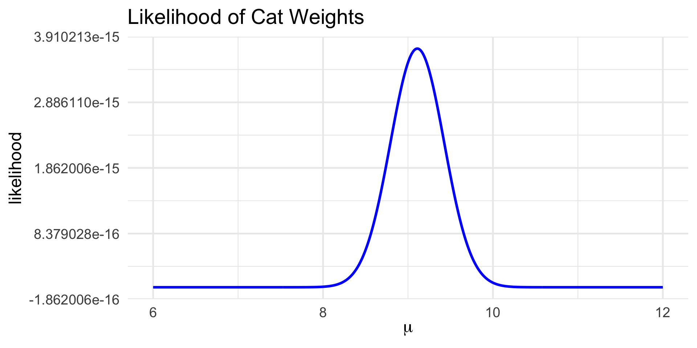
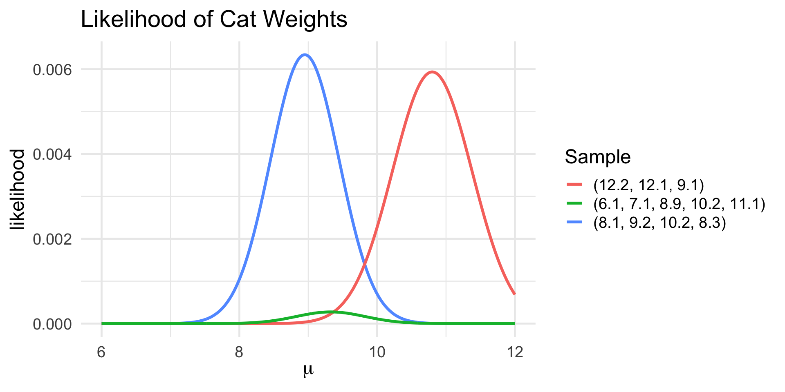
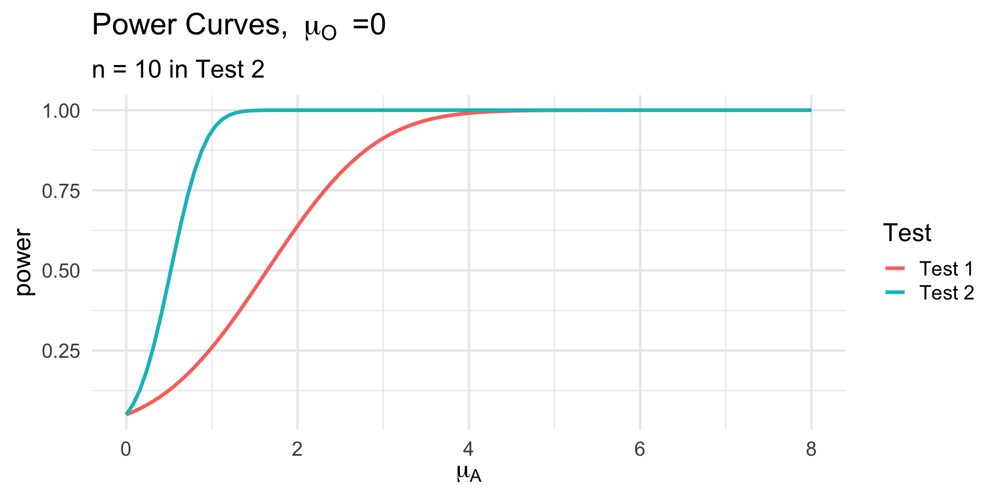

Final Exam Review
PSTAT 120B, Fall 2025, with Dr. Uma Ravat
Department of Statistics and Applied Probability; UCSB
December 4, 2025
\[ \newcommand\R{\mathbb{R}} \newcommand{\N}{\mathbb{N}} \newcommand{\E}{\mathbb{E}} \newcommand{\Prob}{\mathbb{P}} \newcommand{\F}{\mathcal{F}} \newcommand{\1}{1\!\!1} \newcommand{\comp}[1]{#1^{\complement}} \newcommand{\Var}{\mathrm{Var}} \newcommand{\SD}{\mathrm{SD}} \newcommand{\vect}[1]{\vec{\boldsymbol{#1}}} \newcommand{\Cov}{\mathrm{Cov}} \newcommand{\Corr}{\mathrm{Corr}} \usepackage[makeroom]{cancel} \newcommand{\iid}{\stackrel{\mathrm{i.i.d.}}{\sim}} \newcommand{\probto}{\stackrel{\mathrm{p}}{\longrightarrow}} \newcommand{\distto}{\stackrel{\mathrm{d}}{\longrightarrow}} \newcommand{\Lik}{\mathcal{L}} \DeclareMathOperator*{\argmax}{\mathrm{arg }\max} \]
Roadmap for Today
Go through some slides (including some interactive problems)
Work through some problems together (on the worksheet; copies can be found at the front of the room)
Disclaimer
I have not seen the exam yet, so I do not know exactly what will or will not be on it. Just because something does or does not show up on these slides doesn’t mean it is guaranteed to show up / not show up on the exam.
Disclaimer
This review is not intended to be comprehensive; I encourage you to consult the lecture notes, textbook, homework, and your own notes.
Roadmap for Today
Now, there is far too much material for me to be able to meaningfully cover everything that I think is important for the final.
Instead, I’ve elected to select a handful of topics which I think might be confusing (or topics I’d like to expound upon). I’ll go through these relatively quickly, though, as the best way to learn is to practice - so I’d like to leave plenty of time for us to work through some of the problems on the worksheet!
Order of coverage:
- Estimation
- CI for a Difference in Means (time permitting)
- Hypothesis Testing
Estimation
Estimation
General Framework
We have a population, governed by a set of population parameters that are unobserved (but that we’d like to make claims about).
To make claims about the population parameters, we take a sample.
We then use our sample to make inferences (i.e. claims) about the population parameters.

- Inference can mean either estimation or hypothesis testing.
Estimation
Terminology
In estimation, we seek to estimate a particular population parameter.
We do so by taking a sample (Y1, …, Yn) from the population, and constructing an estimator: \[ \widehat{\theta}_n := \widehat{\theta}_n(Y_1, \cdots, Y_n) \]
Crucially, an estimator is a random quantity.
- Contrast this with an estimate, which we obtain by plugging specific data into our estimator.
- E.g. we use the sample mean as an estimator for the population mean; after getting a specific set of observations, their numerical sample mean is the estimate.
Estimation
Properties
- A “good” point estimator is one that possesses one (or several) desirable properties, which we can measure in a few different ways:
- Unbiasedness: \(\E[\widehat{\theta}_n] = \theta\)
- Consistency: \(\widehat{\theta}_n \probto \theta\)
- MSE: \(\mathrm{MSE}(\widehat{\theta}_n) = \mathrm{Bias}^2(\widehat{\theta}_n) + \Var(\widehat{\theta}_n)\)
- Question: do we want high or low MSE?
- MVUE: \(\widehat{\theta}_n\) is unbiased and possesses the smallest variance among all possible unbiased estimators.
- Check your understanding: are all consistent estimators unbiased? Are all unbiased estimators consistent?
Consistency
Definition
Definition: Consistency
An estimator \(\widehat{\theta}_n\) is said to be a consistent estimator for \(\theta\), denoted \(\widehat{\theta}_n \probto \theta\) if, for any \(\varepsilon > 0\), either of the following equivalent statements hold: \[\begin{align*} \lim_{n \to \infty} \Prob\left( |\widehat{\theta}_n - \theta| \leq \varepsilon \right) & = \underline{\qquad \qquad} \\ \lim_{n \to \infty} \Prob\left( |\widehat{\theta}_n - \theta| > \varepsilon \right) & = \underline{\qquad \qquad} \end{align*}\]
\(|\widehat{\theta}_n - \theta| \leq \varepsilon\) means “the distance between \(\widehat{\theta}_n\) and \(\theta\) is very small.” Equivalently: “\(\widehat{\theta}_n\) is very close to \(\theta\).”
The definition of consistency asserts that this probability goes to zero as the sample size increases. That is: “as our sample size becomes larger, we become more certain that \(\widehat{\theta}_n\) is very close to \(\theta\).”
Consistency
Biased but Consistent
Example: \(\widehat{\sigma^2}_n := \frac{1}{n} \sum_{i=1}^{n} (Y_i - \bar{Y}_n)^2\)
Estimation
Constructing Estimators
So far, we’ve primarily been concerned with assessing the performance of an estimator. Now, we turn our attention to the question of how to construct an estimator.
There are two main methods we use:
- The Method of Moments (MoM)
- The method of Maximum Likelihood Estimation (MLE)
Intuition behind the method of moments: our sample moments should closely match the population moments (the sample average cat weight should probably be close to the true average of all cat weights).
Intuition behind maximum likelihood estimation: a good guess for the true value of the parameter is that was most likely to have given rise to the data we observed.
Method of Moments
Method of Moments
Set up p equations (where p is the number of parameters that are desired to be estimated) of the form \[\begin{align*} M_1 &= \mu_1 \\ M_2 & = \mu_2 \\ \vdots & \hspace{5mm} \vdots \\ M_p & = \mu_p \end{align*}\] where \[ M_k := \frac{1}{n} \sum_{i=1}^{n} Y_i^k ; \qquad \mu_k := \E[Y_i^k] \] denote the kth sample moment and population moment, respectively
Solve the equations for the p parameters; these will be the method of moments estimators for the parameters.
Example 2
Example 1
Let \(Y_1, \cdots, Y_n \iid \mathrm{Geom}(p)\). Derive an expression for \(\widehat{p}_{\mathrm{MoM}}\), the method of moments estimator for p.
We have only one parameter, so we only need to set up one equation.
The first population moment is given by \(\mu_1 := \E[Y_i] = 1/p\)
Hence, our method of moments estimator satisfies the equation \[ \overline{Y}_n = \frac{1}{\widehat{p}_{\mathrm{MoM}}} \]
When solved for \(\widehat{p}_{\mathrm{MoM}}\), we obtain \(\boxed{\widehat{p}_{\mathrm{MoM}} = \frac{1}{\overline{Y}_n}}\)
Sampling
Example: Cats!


Leadup
Each one of these samples provides some information about µ, the true average weight of all cats.
For example, suppose we only observed the first sample: \[ \vec{\boldsymbol{y}} = (8.5, \ 12.0, \ 7.5, \ 11.1, ... , \ 8.8, 10.4) \]
- For reference, the average weight of cats in this sample is 9.11 lbs.
Given this sample, how likely do we think it is that the true average weight of all cats is, say, 8 lbs?
Given this sample, how likely do we think it is that the true average weight of all cats is, say, 30 lbs?
Given this sample, how likely do we think it is that the true average weight of all cats is, say, some arbitrary value µ?
Likelihoods
The answer to this last question is precisely the likelihood of a sample.
More generally, \[ \Lik(\theta; Y_1, \cdots, Y_n) \] denotes the likelihood of the true value of the parameter being θ, given observations (Y1, …, Yn).
Mathematically, the likelihood is just the joint density function of (Y1, …, Yn); conceptually, we are now viewing it as a function of θ.
As a concrete example, suppose \(Y_1, \cdots, Y_n \iid \mathcal{N}(\mu, 1)\) (if it helps, you can think of these at cat weights).
Likelihoods
Example
- Since our sample is stated to be i.i.d.,
\[\begin{align*} \class{fragment}{{} \Lik(\theta; Y_1, \cdots, Y_n) } &\class{fragment}{{} := f_{Y_1, \cdots, Y_n}(y_1, \cdots, y_n ; \theta) } \\[3px] &\class{fragment}{{} = \prod_{i=1}^{n} f_{Y_i}(y_i; \theta) } \\[3px] &\class{fragment}{{} = \prod_{i=1}^{n} \left[ \frac{1}{\sqrt{2\pi}} \exp\left\{ - \frac{1}{2} (Y_i - \mu)^2 \right\} \right] } \\[3px] &\class{fragment}{{} = \left( \frac{1}{2\pi} \right)^{n/2} \cdot \exp\left\{ - \frac{1}{2} \sum_{i=1}^{n} (\mu - Y_i)^2 \right\} } \end{align*}\]
Likelihoods
Example
Likelihoods
Example
Maximum Likelihood Estimation
Consider again the likelihood of a sample; \(\Lik(\theta; Y_1, \cdots, Y_n)\).
Recall that this represents how likely any specified value of θ is to be the truth, given the data (Y1, …, Yn).
A good guess for the true value of θ, therefore, is perhaps the one that was most likely to have given rise to the data we observed.
- In other words, the value that maximizes the likelihood.
Definition: Maximum Likelihood Estimator
\[ \widehat{\theta}_{\mathrm{MLE}} := \argmax_{\theta} \left\{ \Lik(\theta; Y_1, \cdots, Y_n) \right\} \]
- Sometimes it’s more convenient to work with the log-likelihood, though it is not always necessary.
Example 3
Example 3
Let \(Y_1, \cdots, Y_n \iid \mathcal{N}(\mu, 1)\). Derive an expression for \(\widehat{\mu}_{\mathrm{MLE}}\), the maximum likelihood estimator for µ.
From before, the likelihood is \[ \Lik(\mu; Y_1, \cdots, Y_n) = \left( \frac{1}{2\pi} \right)^{n/2} \cdot \exp\left\{ - \frac{1}{2} \sum_{i=1}^{n} (\mu - Y_i)^2 \right\}\]
The log-likelihood and its first derivative are therefore given by \[\begin{align*} \class{fragment}{{} \ell(\mu; Y_1, \cdots, Y_n) } &\class{fragment}{{} = -\frac{n}{2} \ln(2\pi) - \frac{1}{2} \sum_{i=1}^{n}(Y_i - \mu)^2 } \\[3px] \class{fragment}{{} \frac{\partial}{\partial \mu} \ell(\mu; Y_1, \cdots, Y_n) } & \class{fragment}{{} = \sum_{i=1}^{n} (Y_i - \mu) = n \bar{Y} - n \mu } \end{align*}\]
Example 2
Example 2
Let \(Y_1, \cdots, Y_n \iid \mathcal{N}(\mu, 1)\). Derive an expression for \(\widehat{\mu}_{\mathrm{MLE}}\), the maximum likelihood estimator for µ.
- Setting this equal to zero and solving for µ reveals that a critical value of the likelihood is given by \(\mu = \overline{Y}_n\).
The second derivative of the log-likelihood is given by \[\frac{\partial^2}{\partial \mu^2} \ell(\theta; Y_1, \cdots, Y_n) = - n \] which is negative everywhere; hence the critical value we found above must be a maximum.
Thus, \(\boxed{\widehat{\mu}_{\mathrm{MLE}} = \overline{Y}_n}\)
Maximum Likelihood Estimation
If the support of the population distribution depends on the parameter of interest, the likelihood will be nondifferentiable (with respect to the parameter of interest).
In such cases, the likelihood must be maximized by inspection - there’s an example of this on the worksheet we’ll go over later today.
Caution
In cases like this (where the support depends on the parameter), do NOT forget about the indicator in the density function.
Two-Sample Confidence Intervals
Leadup
Do UCSB students have, on average, the same commute times as SBCC students?
Assume we have two samples: \[\begin{align*} Y_{1,1}, Y_{1,2}, \cdots, Y_{1, n_1} & \iid \mathcal{N}(\mu_1, \ \sigma^2) \\ Y_{2,1}, Y_{2,2}, \cdots, Y_{2, n_2} & \iid \mathcal{N}(\mu_2, \ \sigma^2) \end{align*}\] (note crucially that we are assuming the two population variances are equal).
- For example, the Y1,i might represent UCSB commute times and the Y2,i might represent SBCC commute times.
Say we want to construct a confidence interval for (µ1 - µ2 ), the difference in true average commute times.
Confidence Interval for a Difference in Means
By previously-established results, \[\begin{align*} \bar{Y}_1 := \frac{1}{n_1} \sum_{i=1}^{n_1} Y_i & \sim \\ \bar{Y}_2 := \frac{1}{n_2} \sum_{i=1}^{n_2} Y_i & \sim \end{align*}\] which in turn implies \[ (\bar{Y}_1 - \bar{Y}_2) \sim \] \[ \frac{(\bar{Y}_1 - \bar{Y}_2) - \qquad \qquad \qquad }{} \sim \mathcal{N}(0, 1) \]
Confidence Interval for a Difference in Means
- In practice, \(\sigma^2\) is often unknown so we replace it with an unbiased estimator: the pooled sample variance \[ S_p^2 := \left( \frac{n_1 - 1}{n_1 + n_2 - 2} \right) S_1^2 + \left( \frac{n_2 - 1}{n_1 + n_2 - 2} \right) S_2^2 \]
- Intuition: we take a weighted average of the two sample standard deviations, placing more weight on the sample with more information (i.e. a greater sample size), that is still an unbiased estimator for \(\sigma^2\).
- Replacing \(\sigma^2\) with \(S_p := \sqrt{S_p^2}\) breaks the normality of our point estimator, requiring us to instead use the \(t_{n_1 + n_2 - 2}\) distribution.
Confidence Interval for a Difference in Means
\[ (\bar{Y}_1 - \bar{Y}_2) \pm t_{n_1 + n_2 - 2, \ \frac{\alpha}{2}} \cdot S_p \cdot \sqrt{\frac{1}{n_1} + \frac{1}{n_2}}\]
Assumptions:
- Normally-distributed population
- Equal population variances
- Make sure you understand how to interpret these intervals with respect to whether or not zero is contained in them.
Hypothesis Testing
Cats
Toe Beans…
- According to a Quora post, the average cat has about a 10% chance of being born with polydactyly

Polydactyly refers to a condition whereby an animal is born with extra digits (e.g. extra fingers in humans, extra toes in cats, etc.)
Suppose we wish to assess the validity of the Quora claim, using data.
- Note that we’re not necessarily trying to estimate the true incidence of polydactyly among cats!
Cats - Again!
Toe Beans…
Say we collect a simple random sample of 100 cats, and observe 9 polydactyl cats in this sample (i.e. \(\widehat{p}\) = 9%).
Does this provide concrete evidence that the Quora claim is incorrect? Not really!
But, say our sample of 100 cats contains 80 polydactyl cats (\(\widehat{p}\) = 80%). Or, say we saw only 1 polydactyl cat in a sample of 100 (\(\widehat{p}\) = 1%).
Now, it is possible that the Quora claim is true and we just happened to get extraordinarily lucky (or unlucky).
But, it’s probably more likely that we should start to question the validity of the Quora statistic.
Hypothesis Testing
General Framework
So where’s the cutoff - how many polydactyl cats do we need to observe in a sample of n before we start to question the Quora statistic?
This is the general framework of hypothesis testing.
We start off with a pair of competing claims, called the null hypothesis and the alternative hypothesis.
- The null hypothesis is usually set to be the “status quo”. For instance, in our polydactyly example, we would set the null hypothesis (denoted H0, and read “H-naught”) to be “10% of cats are polydactyl.”
For the purposes of this class, the null hypothesis is always a statement of equality: \(H_0: \ \theta = \theta_0\) for some null value \(\theta_0\).
Hypothesis Testing
General Framework
- Given a null \(H_0: \ \theta = \theta_0\), three possible alternative hypotheses present themselves to us (among which we must pick one):
- \(H_1: \ \theta < \theta_0\) (lower-tailed)
- \(H_1: \ \theta > \theta_0\) (upper-tailed)
- \(H_1: \ \theta \neq \theta_0\) (two-tailed)
Important
There should be NO OVERLAP between the null and alternative.
- For example, it is incorrect to write a lower-tailed alternative as \(H_1: \ \theta \leq \theta_0\). Can anyone tell me why, conceptually, this is?
States of the World
In a given hypothesis testing setting, the null is either true or not (though we won’t ever get to know for sure).
Independently, our test will either reject the null or not.
This leads to four states of the world:
| Result of Test | |||
| Reject | Fail to Reject | ||
| H0 | True | ||
| False | |||
- Some of these states are good, others are bad. Which are which?
States of the World
| Result of Test | |||
| Reject | Fail to Reject | ||
| H0 | True | BAD | GOOD |
| False | GOOD | BAD | |
- We give names to the two “bad” situations: Type I and Type II errors.
| Result of Test | |||
| Reject | Fail to Reject | ||
| H0 | True | Type I Error | GOOD |
| False | GOOD | Type II Error | |
Definition: Type I and Type II errors
- A Type I Error occurs when we reject \(H_0\), when \(H_0\) was actually true.
- A Type II Error occurs when we fail to reject \(H_0\), when \(H_0\) was actually false.
States of the World
Level and Power
The level of significance (aka “significance level”; aka “level”) of a test, denoted by \(\alpha\), is defined to be the probability of committing a Type I error.
The power of a test, often denoted \(Q(\theta')\), is \[Q(\theta') := \mathbb{P}(\text{Reject $H_0$, when the true value of $\theta$ was $\theta'$}) \]
Generally, we fix the level and try and find the test with the most power (or, equivalently, with the smallest probability of committing a Type II error).
- This leads us to the notion of a Most Powerful Test of Level α (from Topic 15).
Example 1
Example 1
Let \(Y_1, \cdots, Y_n \iid \mathcal{N}(\mu, 1)\) for some unknown µ, and suppose we wish to test H0: µ = µ0 vs HA: µ > µ0 at a 0.05 level of significance. We propose two tests:
- Test 1: Reject H0 when \(Y_1 - \mu_0 > \Phi^{-1}(0.95)\)
- Test 2: Reject H0 when \(\frac{\overline{Y}_n - \mu_0}{1/\sqrt{n}} > \Phi^{-1}(0.95)\)
- Verify that both tests have a 5% level of significance.
- Derive expressions for the power functions of both tests.
Example 1
Part (a)
Let’s focus on Test 1.
By definition, the level of the test is the probability of rejecting the null when the null was true.
Saying that “the null was true” is saying that the true value of µ is µ0, in which case \(Y_1 \sim \mathcal{N}(\mu_0, 1)\).
Hence, the probability of rejecting the null (i.e. that \(Y_1 - \mu_0 > \Phi^{-1}(0.95)\)) if the null is true is:
\[\begin{align*} \Prob_{H_0}(Y_1 - \mu_0 > \Phi^{-1}(0.95)) & = 1 - \Prob_{H_0}(Y_1 - \mu_0 \leq \Phi^{-1}(0.95)) \\ & = 1 - \Phi[\Phi^{-1}(0.95)] = 1 - 0.95 = 0.05 \ \checkmark \end{align*}\]
- Try Test 2 on your own.
Example 1
Part (b)
We now turn our attention to the power curves. Again, we start with Test 1.
Q(µA) is the probability of rejecting the null when the true value of µ is in fact µA.
Saying that “the true value of µ is in fact µA” means \(Y_1 \sim \mathcal{N}(\mu_A, 1)\). Furthermore, we reject the null when \(Y_1 > \Phi^{-1}(0.95)\).
Hence,
Example 3
Part (b)
\[\begin{align*} Q_1(\mu_A) & = \Prob_{\mu_A}(Y_1 - \mu_0 > \Phi^{-1}(0.95)) \\ & = \Prob_{\mu_A}(Y_1 - {\color{blue} \mu_A + \mu_A} - \mu_0 > \Phi^{-1}(0.95)) \\ & = \Prob_{\mu_A}({\color{red}Y_1 - \mu_A} > \Phi^{-1}(0.95) + (\mu_0 - \mu_A)) \\ & = 1 - \Phi[\Phi^{-1}(0.95) + (\mu_0 - \mu_A)] \end{align*}\]
- For test 2:
\[\begin{align*} Q_2(\mu_A) & = \Prob_{\mu_A}\left(\frac{\overline{Y}_n - {\color{blue} \mu_A + \mu_A} - \mu_0}{1/\sqrt{n}} > \Phi^{-1}(0.95) \right) \\ & = \cdots = 1 - \Phi\left[\Phi^{-1}(0.95) + \sqrt{n}(\mu_0 - \mu_A) \right] \end{align*}\]
Example 3
Part (b)
Hypothesis Testing
p-Value Framework
Instead of the critical value framework, we can also conduct hypothesis tests using p-values
The p-value is the probability of observing something as or more extreme (in the direction of the alternative) than what we actually observed.
Lower-tailed: ℙ(TS < ts)
Upper-tailed: ℙ(TS > ts)
Two-sided: ℙ(|TS| > ts)
A picture is worth a thousand words!

Hypothesis Testing
PSTAT 120B
- In PSTAT 120B, we covered:
- Large- and small-sample tests for the mean
- Small-sample tests for a difference in means
- Tests for the variance (assuming a normal population)
- Make sure that, for each, you understand:
- What assumptions are required
- How to conduct them (in both the critical value and p-value frameworks)
- Keep in mind, hypothesis test questions on the final exam for PSTAT 120B are often (not always, though) word problems!
Hypothesis Testing
PSTAT 120B
I find it useful to also quickly review how these tests are derived. This can, in my opinion, help with the memorization aspect.
For example, suppose we are testing \(H_0: \mu = \mu_0\) against \(H_A: \mu \neq \mu_0\) using data \(Y_1, \cdots, Y_n \iid \mathcal{N}(\mu, 1)\).
- A natural point estimator for \(\mu\) is \(\bar{Y}\), which we know is normally-distributed, so a natural test statistic is its standardized form, under the null: \(Z := (\bar{Y} - \mu_0)/(\sigma / \sqrt{n})\).
- If \(\bar{Y}\) is far from \(\mu_0\) (equivalently, that \(Z\) is far from zero), we have evidence that the true mean is not \(\mu_0\): i.e. we have evidence against the null and in favor of the alternative.
- This reveals a rejection region of the form \(|Z| > c\) for some critical value \(c\), which can be derived by setting the level of the test to be \(\alpha\).
Hypothesis Testing
PSTAT 120B
Take a look through 10.7 of the textbook, titled “Some Comments on the Theory of Hypothesis Testing.” The authors provide some (in my opinion) very useful and practical comments on hypothesis testing.
Also, even though material from Topic 15 will not feature heavily on the exam (if at all - again, I haven’t seen the exam yet!) I HIGHLY recommend you take a look at it before moving on to your future statistics courses.
- Pretty much every course will at least in part make reference to that material, even if behind the scenes.
- Any time you perform a hypothesis test (e.g. in: Machine Learning, Time Series, etc.), you’re often concerned with finding a test with optimal power. The Neyman-Pearson Lemma and Likelihood Ratio Tests gives you such a test in many cases!
- Pretty much every course will at least in part make reference to that material, even if behind the scenes.

PSTAT 120B F25; Material © Ethan P. Marzban